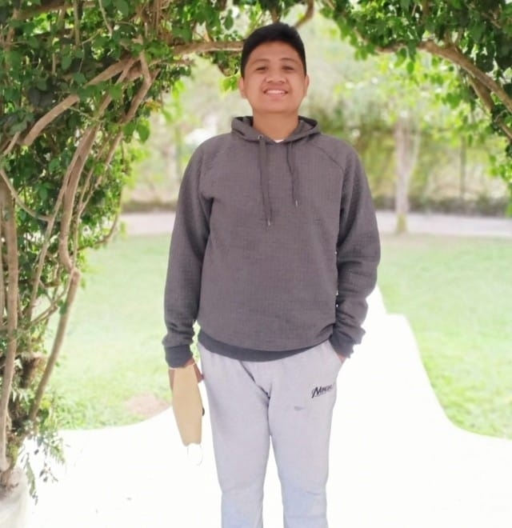

I'm Christopher Boy G. Tangalin, and I'm 18 years old and currently in my 1st-Year College, taking a Bachelor of Science In Information Technology at the University of Baguio. We are three siblings, and I am the youngest child. I have lived in Baguio City for 18 years. I like playing video games when I have some free time or am bored and i also like watching movie and listening to a music.